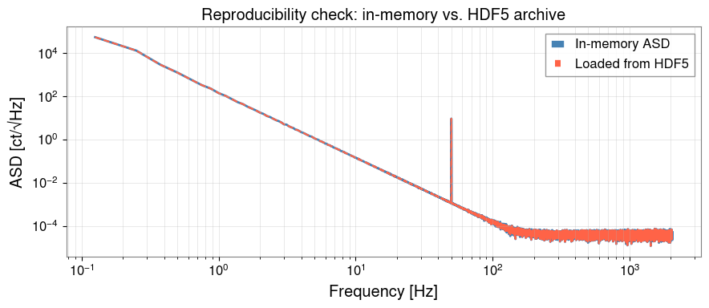

Note
This page was generated from a Jupyter Notebook. Download the notebook (.ipynb)
Reproducible Metadata Management with HDF5
Provenance means recording who did what, when, and how so that any analysis result can be reproduced exactly by someone else — or by yourself six months later.
In gravitational-wave data analysis, provenance is critical because:
Parameters (GPS times, FFT lengths, filter settings) change between runs
Software versions affect numerical results
Sharing results with collaborators requires a self-describing file
This tutorial shows how to use gwexpy’s HDF5 interop layer together with h5py attribute metadata to build self-describing, provenance-rich analysis archives.
What this tutorial covers:
Saving a
TimeSeriesto HDF5 with basic metadataAdding provenance attributes (software version, parameters, GPS time)
Storing derived products (ASD, spectrogram) with full lineage
Reading back and verifying provenance
Building a provenance-aware analysis pipeline helper
Setup
[1]:
import datetime
import json
import os
import platform
import tempfile
import h5py
import numpy as np
import gwexpy
from gwexpy.timeseries import TimeSeries
from gwexpy.frequencyseries import FrequencySeries
from gwexpy.interop.hdf5_ import to_hdf5, from_hdf5
1. Synthetic Data
We create a short DARM-like time series with a known injection for later verification.
[2]:
fs = 4096.0
T = 64.0
N = int(T * fs)
t0 = 1_300_000_000 # GPS epoch
rng = np.random.default_rng(0)
# Coloured noise + 50 Hz sine injection
t = np.arange(N) / fs
freqs_n = np.fft.rfftfreq(N, 1.0/fs)[1:]
asd_model = np.where(freqs_n < 50, (50/freqs_n)**3, 1.0)
fft = asd_model * np.exp(1j * rng.uniform(0, 2*np.pi, size=len(freqs_n)))
fft = np.concatenate([[0.0], fft])
noise = np.fft.irfft(fft, n=N)
inj = 5.0 * np.sin(2*np.pi * 50.0 * t)
ts = TimeSeries(noise + inj, t0=t0, sample_rate=fs,
name="K1:LSC-DARM_OUT_DQ", unit="ct")
print(f"TimeSeries: {len(ts)} samples @ {fs} Hz, t0={t0}")
TimeSeries: 262144 samples @ 4096.0 Hz, t0=1300000000
2. Writing to HDF5 with Provenance Metadata
to_hdf5() saves the data array and basic metadata (t0, dt, unit, name). We then add provenance attributes directly on the HDF5 dataset:
Software versions
Analysis parameters
Timestamp of the run
Host information
[ ]:
def build_provenance(params: dict) -> dict:
return {
"gwexpy_version": gwexpy.__version__,
"numpy_version": np.__version__,
"h5py_version": h5py.__version__,
"python_version": platform.python_version(),
"hostname": platform.node(),
"created_utc": datetime.datetime.now(datetime.timezone.utc).isoformat(),
"params_json": json.dumps(params), # analysis parameters as JSON
}
# Analysis parameters (these would vary between runs)
analysis_params = {
"fftlength": 4.0,
"overlap": 0.5,
"method": "median",
"freq_range": [10.0, 2000.0],
}
hdf5_path = tempfile.mktemp(suffix=".h5")
with h5py.File(hdf5_path, "w") as f:
# --- Raw TimeSeries ---
raw_grp = f.require_group("raw")
to_hdf5(ts, raw_grp, "darm")
dset = raw_grp["darm"]
prov = build_provenance(analysis_params)
for key, val in prov.items():
dset.attrs[key] = val
dset.attrs["description"] = "Raw DARM output, uncalibrated"
print("Written dataset attributes:")
for k, v in dset.attrs.items():
print(f" {k}: {str(v)[:60]}")
print(f"\nHDF5 file: {hdf5_path} ({os.path.getsize(hdf5_path)/1024:.1f} kB)")
3. Storing Derived Products with Full Lineage
Each derived product (ASD, spectrogram, filtered series) should reference the parent dataset so the full processing chain is traceable.
[4]:
# Compute ASD
asd = ts.asd(fftlength=analysis_params["fftlength"],
overlap=analysis_params["overlap"],
method=analysis_params["method"])
with h5py.File(hdf5_path, "a") as f:
proc_grp = f.require_group("processed")
# Save ASD frequencies and values as separate datasets
freq_dset = proc_grp.create_dataset("asd_frequencies", data=asd.frequencies.value)
freq_dset.attrs["unit"] = "Hz"
asd_dset = proc_grp.create_dataset("asd_values", data=asd.value)
asd_dset.attrs["unit"] = str(asd.unit)
asd_dset.attrs["name"] = asd.name
# Provenance: link back to parent + record parameters
prov_asd = build_provenance(analysis_params)
prov_asd["parent_dataset"] = "/raw/darm"
prov_asd["processing_step"] = "ASD via Welch/median"
for key, val in prov_asd.items():
asd_dset.attrs[key] = val
# Print structure
def print_tree(name, obj):
indent = " " * name.count("/")
attrs_summary = f" [{len(obj.attrs)} attrs]" if hasattr(obj, "attrs") else ""
print(f"{indent}{name.split('/')[-1]}{attrs_summary}")
print("HDF5 file structure:")
f.visititems(print_tree)
HDF5 file structure:
processed [0 attrs]
asd_frequencies [1 attrs]
asd_values [11 attrs]
raw [0 attrs]
darm [12 attrs]
"created_utc": datetime.datetime.utcnow().isoformat(),
4. Reading Back and Verifying Provenance
A collaborator (or future-you) can open the file and immediately understand what analysis produced each dataset, using what parameters and software.
[5]:
with h5py.File(hdf5_path, "r") as f:
# Reconstruct TimeSeries
ts_loaded = from_hdf5(TimeSeries, f["raw"], "darm")
# Read provenance from the raw dataset
dset_attrs = dict(f["raw/darm"].attrs)
params_loaded = json.loads(dset_attrs["params_json"])
# Read back ASD
freqs_loaded = f["processed/asd_frequencies"][:]
asd_loaded = f["processed/asd_values"][:]
asd_prov = dict(f["processed/asd_values"].attrs)
print("=== Reconstructed TimeSeries ===")
print(f" name : {ts_loaded.name}")
print(f" t0 : {ts_loaded.t0.value}")
print(f" samples: {len(ts_loaded)}")
print(f" unit : {ts_loaded.unit}")
print("\n=== Provenance (raw/darm) ===")
for key in ["gwexpy_version", "created_utc", "hostname"]:
print(f" {key}: {dset_attrs[key]}")
print("\n=== Analysis parameters ===")
for key, val in params_loaded.items():
print(f" {key}: {val}")
print("\n=== ASD parent reference ===")
print(f" parent_dataset : {asd_prov['parent_dataset']}")
print(f" processing_step : {asd_prov['processing_step']}")
=== Reconstructed TimeSeries ===
name : K1:LSC-DARM_OUT_DQ
t0 : 1300000000.0
samples: 262144
unit : ct
=== Provenance (raw/darm) ===
gwexpy_version: 0.1.1
created_utc: 2026-04-05T13:10:15.492046
hostname: DELL5860
=== Analysis parameters ===
fftlength: 4.0
overlap: 0.5
method: median
freq_range: [10.0, 2000.0]
=== ASD parent reference ===
parent_dataset : /raw/darm
processing_step : ASD via Welch/median
5. Provenance-Aware Pipeline Helper
For repeated use, wrap the provenance pattern in a reusable context manager that automatically attaches metadata to every dataset written inside it.
[6]:
import contextlib
@contextlib.contextmanager
def provenance_file(path, params: dict, mode: str = "w"):
with h5py.File(path, mode) as f:
def save_ts(ts_obj, group_path: str, name: str, description: str = ""):
grp = f.require_group(group_path)
to_hdf5(ts_obj, grp, name)
dset = grp[name]
prov = build_provenance(params)
for k, v in prov.items():
dset.attrs[k] = v
if description:
dset.attrs["description"] = description
return dset
def save_array(arr, path_in_file: str, unit: str = "",
description: str = "", parent: str = ""):
parts = path_in_file.rsplit("/", 1)
grp_path, name = (parts[0], parts[1]) if len(parts) == 2 else ("", parts[0])
grp = f.require_group(grp_path) if grp_path else f
dset = grp.create_dataset(name, data=arr)
if unit: dset.attrs["unit"] = unit
if description: dset.attrs["description"] = description
if parent: dset.attrs["parent"] = parent
prov = build_provenance(params)
for k, v in prov.items():
dset.attrs[k] = v
return dset
yield f, save_ts, save_array
# --- Use the helper ---
pipeline_path = tempfile.mktemp(suffix="_pipeline.h5")
run_params = {"fftlength": 8.0, "overlap": 0.75, "method": "median", "run_id": "R001"}
with provenance_file(pipeline_path, run_params) as (f, save_ts, save_array):
save_ts(ts, "input", "darm", description="Raw DARM before processing")
asd2 = ts.asd(fftlength=run_params["fftlength"], overlap=run_params["overlap"])
save_array(asd2.value, "products/asd", unit="ct/rtHz",
description="ASD", parent="/input/darm")
save_array(asd2.frequencies.value,"products/freqs", unit="Hz")
print(f"Pipeline archive: {pipeline_path} ({os.path.getsize(pipeline_path)/1024:.1f} kB)")
# Verify run_id was stored
with h5py.File(pipeline_path, "r") as f:
params_back = json.loads(f["input/darm"].attrs["params_json"])
print(f"Verified run_id: {params_back['run_id']}")
Pipeline archive: temporary file (2314.4 kB)
Verified run_id: R001
"created_utc": datetime.datetime.utcnow().isoformat(),
6. Visualise the Stored ASD (Reproducibility Check)
Verify that the ASD loaded from the archive matches the in-memory result.
[7]:
import matplotlib.pyplot as plt
with h5py.File(pipeline_path, "r") as f:
freqs_ar = f["products/freqs"][:]
asd_ar = f["products/asd"][:]
fig, ax = plt.subplots(figsize=(9, 4))
ax.loglog(asd2.frequencies.value[1:], asd2.value[1:],
color="steelblue", lw=2, label="In-memory ASD")
ax.loglog(freqs_ar[1:], asd_ar[1:],
color="tomato", ls="--", lw=1.5, label="Loaded from HDF5")
ax.set_xlabel("Frequency [Hz]")
ax.set_ylabel("ASD [ct/√Hz]")
ax.set_title("Reproducibility check: in-memory vs. HDF5 archive")
ax.legend()
ax.grid(True, which="both", alpha=0.4)
plt.tight_layout()
plt.show()
max_diff = np.max(np.abs(asd2.value[1:] - asd_ar[1:]) / (asd2.value[1:] + 1e-300))
print(f"Max relative difference: {max_diff:.2e} (should be ~machine epsilon)")

Max relative difference: 0.00e+00 (should be ~machine epsilon)
Summary
Step |
API / Pattern |
Purpose |
|---|---|---|
Write TimeSeries |
|
Save data array + basic metadata |
Read TimeSeries |
|
Reconstruct from archive |
Add provenance |
|
Software version, params, timestamp |
Structured pipeline |
|
Auto-attach provenance to all writes |
Recommended provenance attributes:
Attribute |
Content |
|---|---|
|
|
|
|
|
|
|
HDF5 path to the input dataset |
|
Human-readable description of what was done |
Tips:
Use
h5py.File(..., "a")to append to existing archives without overwriting.Store
params_jsonas a JSON string so arbitrary nested parameters are preserved.For long pipelines, add a
pipeline_versionattribute tied to your analysis code’s git hash.